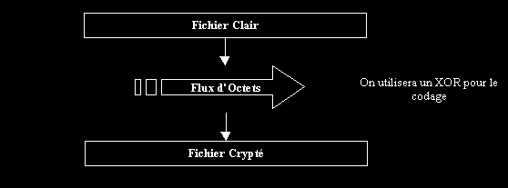

| Cryptosystème : RC4 |
KERCKHOFFS: " Il ne faut pas compter dans un cryptosystème dont la résistance réside dans le fait que l'ennemi ne sache pas comment fonctionne l'algorithme."

I- PRESENTATION
II- ALGORITHME
1- INITIALISATION DU RC4
2- GENERATION DES OCTETS PSEUDO ALEATOIRE
III- CONCLUSION
I- PRESENTATION
Le RC4 fait parti des algorithmes dit de "chiffrement en continu". Le principe de ces algorithmes est d'émettre un flux d'octets (de manière aléatoire) à partir d'une clé. On utilisera ce flux d'octet pour faire un XOR avec le texte à chiffrer.

Comme vous l'avez certainement deviné ce cryptosytème possède une clé secrète qui sera la même pour le cryptage ou le décryptage. Le codage RC4 se fait en 2 temps: tout d'abord une initialisation du générateur aléatoire puis une boucle itérative "sortant" au fur et à mesure une succession d'octets. On parle souvent de générateur de Codon.
Attention: Les octets proviennent d'un algorithme dépendant d'une clé de taille fixée. Les octets engendrés ne sont pas totalement aléatoires - on dit qu'il y a une période et on parlera alors de générateur pseudo aléatoire.
II- ALGORITHME
1- INITIALISATION DU RC4
Comme pour le DES, on va utiliser une table-S. Cette table-S sera (à l'opposé du DES cette fois :) fonction linéaire de la clé. La présence d'une table-S indique d'hors et déjà une relative sécurité du RC4 face à des attaques de cryptanalyse différentielle. (cf. Article sur le DES).
On dispose d'une clé C qui sera notre clé secrète. Cette clé C est codé sur n octets (par exemple ABCD). Soit un tableau K de 256 octets (numéroté K0....K255) initialisé avec C répété autant de fois que nécessaire:
K0 = A, K1 = B, K2 = C, K3 = D, K4 = A, K5 = B ......
Ensuite, on considère une matrice ligne de 256 octets numérotés de la même manière et initialisé tel que Si = i
On va effectuer une permutation affixe de S, suivant l'algorithme:
int j=0;
for ( int i ; i<256 ; i++ )
{
j = ( j + S[i] + K[i] ) % 256;
Swap( S[i], S[j] ); // On échange les valeurs de S[i] et S[j]
}
On a ainsi initialisé la table-S. On remarquera comment cette initialisation dépend de la clé C par l'intermédiaire du tableau K.
2- GENERATION DES OCTETS PSEUDO ALEATOIRE
Le flux des octets ne dépend pas du texte en clair, il ne dépend que de la clé ! La table-S représente la table de permutation. Voici l'algorithme de création des permutations :
int i=0, j=0, k=0;
While( !(eof(texte_clair)) )
{
i = ( i + 1 ) % 256; // calcul des nouveaux indices
j = ( j + S[i] ) % 256;
Swap( S[i], S[j] ); // échange
t = ( S[i] + S[j] ) % 256;
Texte_code += texte_clair[k] ^ S[t]; // Bloc détaillé dans la source
k++;
}
III- CODING
Telecharger ici une ecriture possible du RC4: file://rc4.c
IV- CONCLUSION
Créé en 1987 par Ron Rivest (vous vous souvenez du RSA :), le RC4 a été largement utilisé même s'il est resté pendant de nombreuses années secrets. On ne peut imaginer que la NSA ou d'autres organismes soient restés les bras croisés ; une utilisation du RC4 donne une protection de premier niveau: plus sûr qu'un XOR mais plus faible qu'un DES (tout dépend aussi de la taille de la clé utilisée). Le RC4 n'est pas sensible à des attaques par cryptanalyse différentielle mais trop souvent utilisé avec des clés de taille courte, on peut dans ces cas envisager une recherche de la clé exhaustive.
Enfin, pour les fervents admirateur de Bill Gates, sachez que vos données secrètes (situées dans les .pwl) sont encodées avec (entre autres !) le RC4 (clé de 32 bits).
Pour toutes questions, commentaires, critiques, erreurs: sabrina@inorbit.com